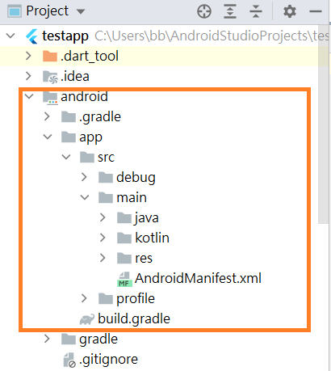
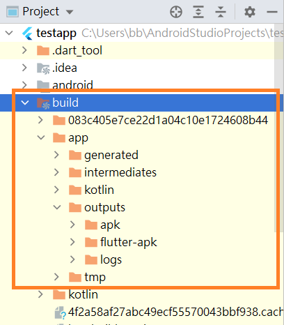
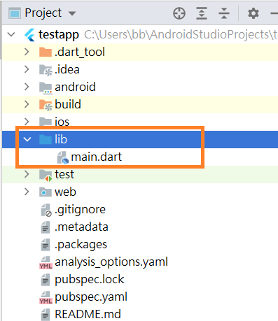

請開啟或新增專案名稱為testapp的Flutter專案並將專案顯示於模擬器。
1. 開啟Android Studio
2. 選擇New Flutter project
3. 確定Flutter SDK位置
4. 設定Flutter project name為testapp
5. 設定organization為tw.edu.stust.mis
6. 點選 finish 建立project
7. 開啟模擬器
8. 執行專案
專案中android資料夾用於進行建立Android原生應用時使用，AndroidManifest.xml用於設定Android應用，res檔案夾包含Android平台會使用的圖示(icon)、圖片與樣式。
練習：請下載並解壓縮res檔，將檔案夾內hdip(72x72)、mdip(48x48)、xhdip(96x96)、xxhdip(144x144)、xxxhdip(192x192) lion.png複製至project-android-app-src-main-res個別檔案夾中，並修改Android設定檔AndroidManifest.xml檔內容讓APP圖示由預設ic_launcher.png改為lion.png。
1. 下載res.zip並解壓縮
2. 將解壓縮後所有檔案夾mipmap-hdpi至mipmap-xxxhdpi複製並覆蓋專案project-android-app-src-main-res
3. 開啟AndroidManifest.xml並將 ic_launcher 改為 lion
4. 移除模擬器中testapp應用程式後，重新執行
當使用者選擇Android studio命令Build-Flutter-Build APK時，專案Android apk檔會存放於專案build-app-outputs-apk檔案夾中。
所有專案的頁面程式必須至於lib資料夾中，Flutter使用Dart程式來進行頁面設計，預設project僅包含單一頁面程式main.dart。
pubspec.yaml為專案設定檔，Flutter專案經常需要利用外部資源包含第三方套件、外部字型、圖片與影片等，這些都必須在pubspec.yaml檔中進行設定，請注意：pubspec.yaml檔案編輯是類似大綱設定，同樣階層必須對齊，而且不能使用TAB鍵來進行對齊。